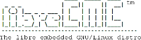

Следующие дистрибутивы можно установить на жесткий диск компьютера или запустить с оптического диска.
Далее следует список дистрибутивов небольших систем. Эти дистрибутивы предназначены для устройств с ограниченными ресурсами, например беспроводных маршрутизаторов. Свободный дистрибутив небольшой системы не самостоятелен, но должна быть возможность разрабатывать и собирать его в одной из полных свободных систем, перечисленных выше, возможно, с помощью свободных средств разработки, распространяемых с самим дистрибутивом этой небольшой системы.
| Дистрибутив | Краткое описание |
|---|---|
|  | libreCMC, встраиваемый дистрибитив GNU/Linux для устройств с очень ограниченными ресурсами. Хотя в первую очередь он предназначен для маршрутизаторов, он предлагает поддержку широкого спектра устройств и применений. В 2015 году LibreWRT соединился с libreCMC. |
 |
ProteanOS, новый, небольшой и быстрый дистрибутив для встроенных систем. Его функция конфигурирования платформы позволяет конфигурировать двоичные пакеты во время сборки и во время выполнения для различной аппаратуры и применений. |